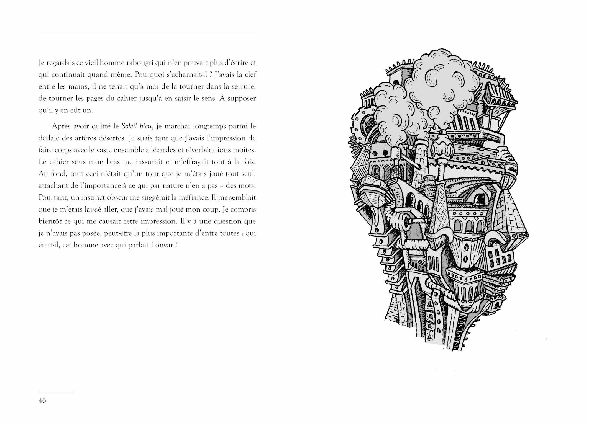
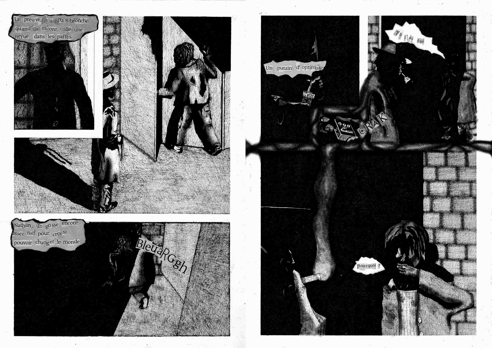

Roman
246 pages avec illustrations
20 euros
On m’a condamné à l’exploration du vide. Station orbitale 4F, dans un futur lointain. Rues aussi immenses que dépeuplées, marche de l’histoire à l’arrêt. Des sectes étranges prêchent la fin des temps, la pluie acide tombe à torrents. Un journaliste en exil, tout juste débarqué, se réfugie dans un café. Là, un vieillard écrit, frénétiquement. Pourquoi refuse- t-il obstinément d’être lu ? Et surtout, pourquoi un marginal comme lui recevrait-il la visite d’un grand ponte de la 4F ? C’en est assez, quand on est en mal de scoop, pour se décider à enquêter. S’ouvre alors, pour le nouvel arrivant, un abîme où langage, vérité et croyances se télescopent. Une chose est sûre : si l’avenir est cadenassé, le mystérieux vieillard est persuadé d’en détenir la clef.


